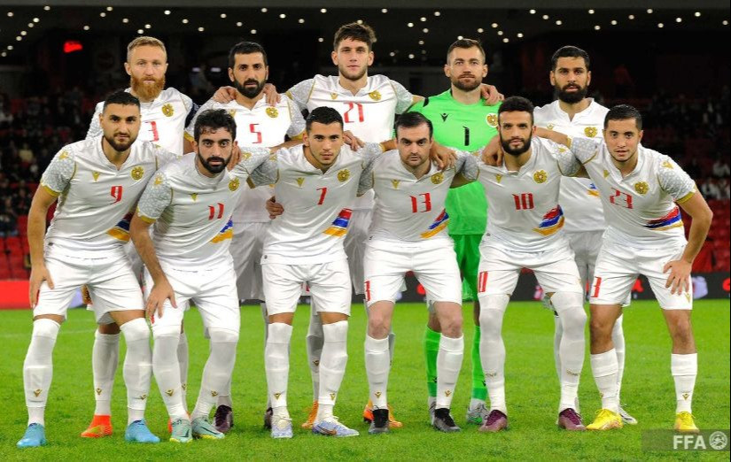

ՀՖՖ-ի հիմնական խնդիրներն են երկրում ֆուտբոլի տարածումը, զարգացումը, զանգվածային և մանկապատանեկան ֆուտբոլի կազմակերպման ապահովումը, ֆուտբոլիստների վարպետության բարձրացումը, մրցավարների, մարզիչների, մարզիկների բարոյական բարձր հատկանիշների դաստիարակումը, հանրապետության մրցումների կազմակերպումն ու անցկացումը, այդ համակարգերի կատարելագործումը, հայրենական ֆուտբոլի նյութատեխնիկական բազայի զարգացմանը նպաստելը։ ՀՖՖ-ն մշակում է հանրապետությունում ֆուտբոլի զարգացման ընթացիկ և հեռանկարային ծրագրեր, կազմակերպում հանրապետության հավաքական թիմերի նախապատրաստումը միջազգային տարբեր մրցումների։ ՀՖՖ-ն միավորում է մարզային ֆեդերացիաները, ֆուտբոլի ակումբները, մարզադպրոցները, մարզակենտրոնները, բաժանմունքները, համագործակցում է Հայաստանի սպորտի և երիտասարդության հարցերի նախարարության հետ։
ՀՖՖ բարձրագույն մարմինը համագումարն է, որը 4 տարով ընտրում է նախագահ և գործադիր կոմիտեի անդամներ։ Աշխատանքային մարմինը գործկոմն է։ Հրատապ խնդիրներ լուծելու համար ստեղծվել է գործկոմի բյուրո։ Ֆուտբոլի զարգացման հարցերի կարգավորման, ընդունված որոշումների կատարման ընթացքը հսկելու, գործկոմին առաջարկներ ներկայացնելու համար ստեղծվել են բաժիններ (զանգվածային, մրցավարական, պատանեկան, միջազգային կապեր և այլն)։ Ֆեդերացիայում գործում է բաժանմունք, որի գործունեությունը նպատակաուղղված է կանանց ֆուտբոլին[1]։ 2023 թվականի մայիսին Հայաստանի ֆուտբոլի ֆեդերացիան ստացել է FIFA FORWARD Awards 2023 մրցանակը փոքր դաշտերի նախագծերի համար։ ՖԻՖԱ-ի՝ մասսայական ֆուտբոլի միջտարածաշրջանային ենթակառուցվածքների զարգացման ծրագրի շրջանակներում ներկայացված էին երկրի տարբեր մարզերի 89 փոքր դաշտերը[2]։
